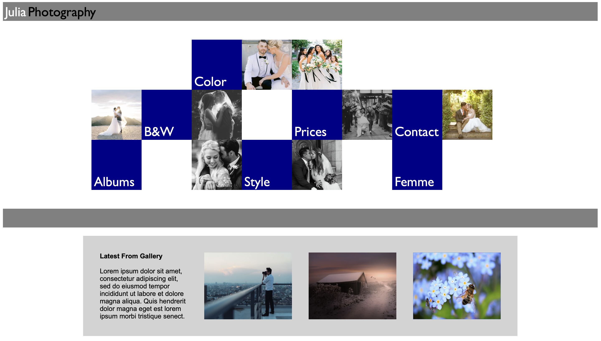
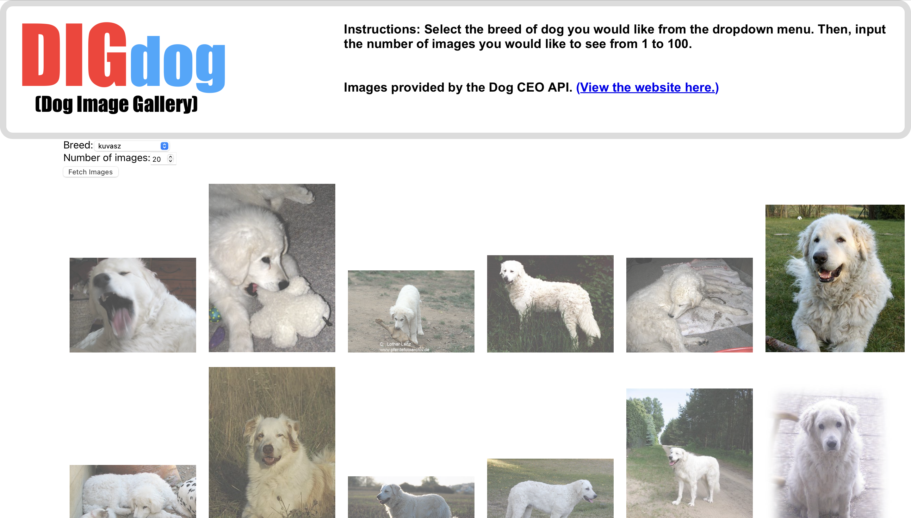
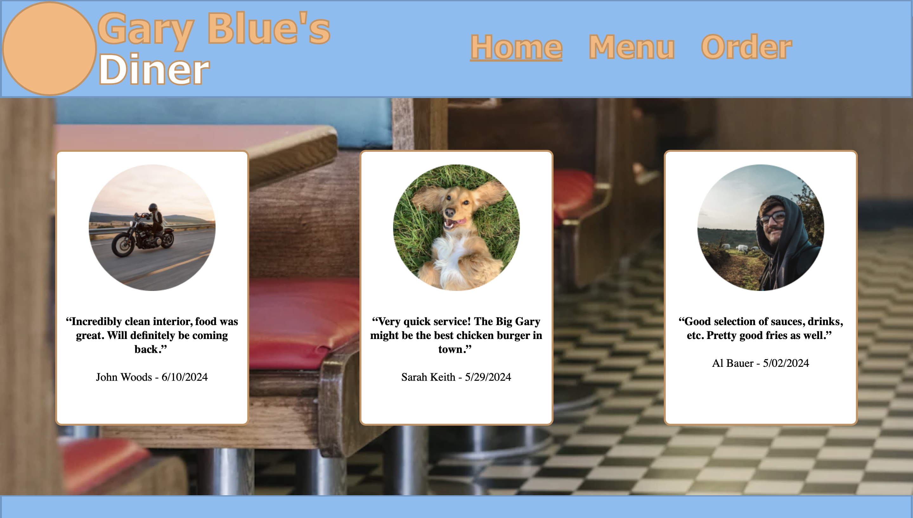
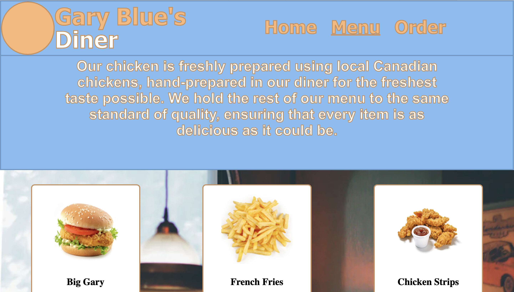

Here are some of the projects I've been assigned for my course with Keyin College. I do have more projects that I've worked on as well that aren't picture below. (Such as the last semester final sprint, which tasked my group with programming a robot!)

The above: Julia Photography, a mock-up of a photography website that has a variety of links and boxed images.

The above: DIGdog, a website I made for the purpose of searching for dog pictures using the Dog CEO API. It was my first React project.

The above: Gary Blue's Diner, a mock-up website made for the first sprint.
Pictured in this frame is the home menu at the section showing reviews from pretend customers.

The above: Another screenshot from the Gary Blue website. This page had a menu for the purpose of getting names and descriptions for the different menu items you could find on the Order page (which used DOM manipulation to store inputs such as name, number, address, etc.)